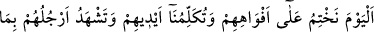

(ed-Duhân, 44/49) âyetinde olduğu gibi bir cezâ ve aşağılama emridir. Mânâ şöyledir:
Dünyadaki sürekli inkâr etmeniz sebebiyle bugün oraya/cehenneme girin ve onun
hararetine ve çeşit çeşit azâbına katlanın.
“Bugün” kelimesinin zikredilmesi, onların hasret ve pişmanlıklarını şiddetlendirecek
hususlardandır. Yani sizin zevk ve safâ günleriniz geçti. Bu vakit ve bugünden itibaren
artık sizin azap vaktinizdir.
Ebû Hüreyre (r.a.) der ki: “Cehennem ateşi bin yıl yakılıp tutuşturuldu, sonunda
bembeyaz oldu. Sonra bin yıl daha yakılıp tutuşturuldu, kıpkırmızı oldu. Sonra bin yıl
daha yakılıp tutuşturuldu, simsiyah oldu. Şimdi cehennem zifiri karanlık gece gibi
simsiyahtır.”[163] O, Allah Teâlâ’nın mücrimlere hazırladığı bir zindandır.
Hz. Peygamber (s.a.) Cebrâil (a.s.)’a: “Mîkâil’i neden hiç gülerken görmüyorum?”
diye sordu. Cebrâil (a.s.): “Mîkâil cehennem yaratılalı beri hiç gülmedi.” dedi.[164]
Bazıları der ki: “Cehennemden bahsetmek zor ve çetindir, kaldı ki ona bakmak. Ona
bakmak zordur, kaldı ki ona yaklaşıp varmak. Ona varmak zordur, kaldı ki ona girmek.
Ona girmek zordur, kaldı ki orada ayrı kalmak ve rüsvay olmak. Bu sebeple ‘Dünyada
rüsvay olmak âhirette rüsvay olmaktan daha hafif ve kolaydır.”
Seriy Sakatî (r.h.)’ın şöyle dediği nakledilmiştir: “Kabrim beni kabul etmez de
halkının nezdinde rüsvay olurum korkusuyla Bağdad’dan başka bir beldede ölmeyi arzu
ederim.”
Attâr (r.h.) der ki: “Bir ateş yakılıp tutuşturulsa da Rahmân tarafından “Kim kendini
bu ateşe atarsa yok olacak” denilse, ebedî azabdan kurtulduğum için ateşe ulaşmadan
sevinçten ölmekten korkarım.”
Hakîkî bir tevhid ile muvahhid, âbid ve ârif kimseler oldukları, inkâr, şirk ve günahlar
cehenneme girmenin sebebi olduğu halde bu büyük zatların nasıl kendilerine sû-i zanda
bulunduklarına bir bak ve düşün.
Şeyh Sa’dî der ki:
Rabbim! Yüceliğin hakkı için beni hor ve hakir etme;
Günah zilletiyle utandırma
Senin yüzünden utandığım bana yeter;
Gayrı başkasının önünde mahcûb eyleme
İster lütfunla çağır, ister kapından at.
Ben senin eşiğinden başkasına baş koymam
Rabbim! Varlığın hakkı için gözümü bâtıla baktırma;
Nûrunun hakkı için yarın beni ateşte yakma